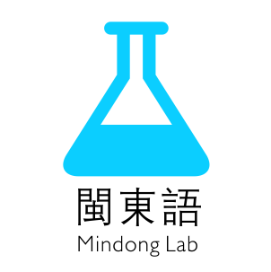

关于
闽东语实验室是一个开源的社群。我们致力于用软件和技术保护闽东语。我们希望为学习闽东语、保护闽东语的你提供好用的工具，以及技术支持。
- 保护母语，支持语言多元化
- 开源精神，人人参与
现有项目
- 福州话熟语大全 http://idioms.mindong.asia (Source code)
如何加入？
只要你认同我们的理念，并且付诸实践，你就已经是我们的一员。
你现在就可以在我们现有的项目里提交 Issue 以及 Pull request， Fork 它们。你也可以开始自己的新项目。如果你希望把你的项目加入这个列表，请通过页尾的方式联系我们。
如果你不懂得编程，你也可以做出贡献，帮我们找 Bug，提供反馈意见，以及提供语言学、民俗知识方面的协助。
联系我们
Radium Zheng (@ztl8702)
其他联系方式 (maybe Slack) 筹划中。